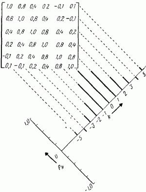

Мат. ожидание - среднее значение случайной величины. В рамках данной выборке вычисляется по формуле:
M[X] = (∑ i=1n xi) / n,
где n - длина реализации временного ряда, xi - значение временного ряда в момент времени i
Дисперсия - мера разброса значений данной случайной величины , то есть её отклонения от мат. ожидания. В рамках данной выборке вычисляется по формуле:
D[X] =(∑ i=1n ((xi - M[X])2)) / n
Корреляционная функция - функция времени или пространственных координат, которая задает корреляцию в системах со случайными процессами.
Для расчета автокорелляционной функции использовался следующий алгоритм:
1) Рассчитывается автокорреляционная матрица
2) Рассчитывается среднее значение на диагоналях этой матрицы
3) Строится соответствие между номером диагонали и рассчитанным средним значением на этой диагонали.
Таким образом, получаем зависимость корреляции от лага (сдвига).
Закон распределения вероятностей - это закон, описывающий область значений случайной величины и вероятности их исхода (появления).
Для построения графика закона распределения вероятностей вся область значений случайного временного ряда разбивается на интервалы. Далее для каждого такого интервала (xi, xi+1) рассчитывается количество значений временного ряда x˜, таких что: x˜ принадлежит (xi, xi+1)
Если узлы интерполяции равноотстоящие и упорядочены по величине, так что , то есть , то интерполяционный многочлен можно записать в форме Ньютона.
Spline - это определенная в некоторой области G ∈ Rn кусочно-полиномиальная функция из класса Cr(G).
Таким образом существует разбиение области G на подобласти такое, что внутри каждой подобласти сплайн представляет собой полином некоторой степени М.
Интерполяция при помощи сплайнов называется сплайн-интерполяцией.
Автоковариационный коэффициент γk для задержки k изменяет ковариацию между двумя величинами zt и zt+k, разделенными интервалом k. Функция γk от задержки k называется автоковариационной функцией {γk}, стохастического процесса. Аналогично функция ρk от задержки k называется автокорреляционной функцией {ρk} стохастического процесса. Заметим, что автокорреляционная функция безразмерна, т. е. независима от масштаба изменения временных рядов. Так как yk = ρkσk2, знание автокорреляционной функции {ρk} и дисперсии σz2 эквивалентно знанию автокорреляционной функции {γk}.
Автокорреляционная функция, представлена на рис. 6 как график диагональных элементов автокорреляционной матрицы, показывает, как изменяется корреляция между двумя любыми членами ряда по мере изменения расстояния между ними. Так как ρk = ρ-k, автокорреляционная функция должна быть симметричной относительно нуля и на практике необходимо изображать только правую половину функции (для положительных k).
Из ранее сказанного следует, что нормальный стационарный процесс zt полностью описывается его средним значением μ и его автоковариационной функцией {γk1}, или, что эквивалентно, его средним значениям μ, дисперсией σz2 и автокорреляционной функцией ρk.
Рисунок 6. Автокорреляционная матрица и соответствующая автокорреляционная функция.